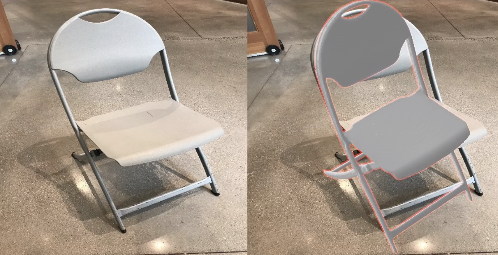
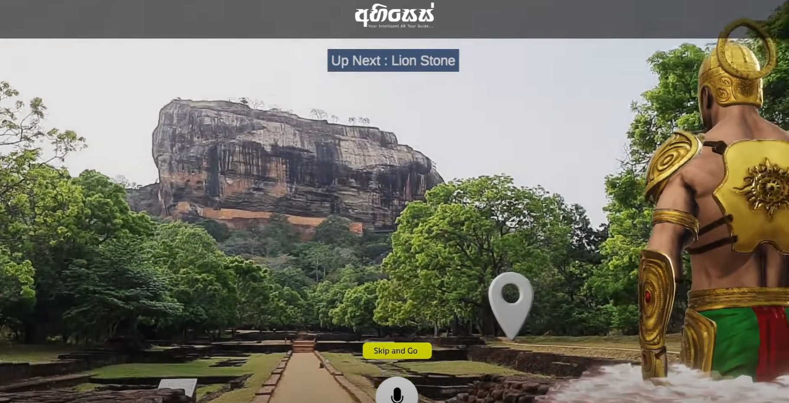
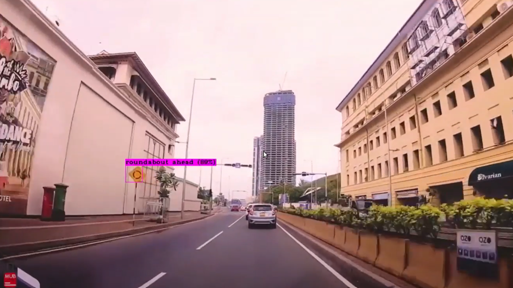

|
Mayura Manawadu Hey! I'm pursuing an MS in Computer Vision at KNU, South Korea, under Prof. Soon-Yong Park. I'm part of the Computer And Robot Vision Laboratory, focusing on 3D computer vision to interpret the world through camera lenses. My current project blends robotics, XR/AR, and AI to develop intelligent systems that learn from human input and adapt to new situations. I specialize in 6D pose estimation and deep learning to enhance machine interaction with their surroundings. My aim is to simplify and naturalize our use of technology. Check out my work to see these concepts in action. Prior to this, I was with London Stock Exchange Technology (LSEG Technology) for 1.5 years, working on Surveillance Systems and Market Maker Monitoring for the Qatar Stock Exchange, leveraging my data science skills. My journey in tech began with a Computer Engineering degree from the University of Sri Jayewardenepura, Sri Lanka, where I achieved a First Class Degree, was second in my department, and received a Gold Medal for my academic and extracurricular efforts. This background is pivotal in my journey towards crafting user-friendly and smart tech solutions. Deep Learning, Computer Vision, and AR/XR content creation are my main interests. |

|
ResearchI'm interested in 3D Computer Vision, Deep Learning, 6DoF Pose Estimation and XR Contents. Most of my research is about inferring the physical world (shape, motion, color, light, etc) from images, usually with radiance fields. Representative papers are highlighted. |
|

|
Enhancing 6DoF Pose and Focal Length Estimation from Uncontrolled RGB Images for Robotics Vision
Mayura Manawadu, Soon-Yong Park project page / video / We present a two-stage approach for accurate 6DoF pose estimation in robotics, addressing challenges with single RGB images in uncontrolled environments. By decoupling projection parameters and using a render and compare strategy, our method significantly improves accuracy and adaptability, as demonstrated by both quantitative and qualitative results. |
|

|
Abhises : An Intelligent Virtual Tour Guide
Mayura Manawadu, Udaya Wijenayake Gihan Chathuranga Charitha Weerasooriya Minura Wijesinghe Poorna Perera Sandun Wijerathne project page / video / An Intelligent Augmented Reality Tourist Guide, leveraging Computer Vision and Deep NLP to simulate a real guide's behavior. Capable of environment detection and interaction, it was developed as a final year undergrad project. |

|
Predictive Analysis of Accidents Based on US Accident Data
Mayura Manawadu, Udaya Wijenayake project page / video / IEEEExplore This research develops a predictive system utilizing US accident data to accurately forecast road accidents and enhance safety through advanced route recommendations and real-time alerts. |
|

|
Voice-Assisted Real-Time Traffic Sign Recognition System Using
Convolutional Neural Network
Mayura Manawadu, Udaya Wijenayake project page / video / ResearchGate This study introduces a voice-assisted traffic sign recognition system using CNNs, achieving real-time detection with high accuracy, aimed at improving road safety and aiding in the development of autonomous vehicles. |
|
Design and source code from Jon Barron's website |